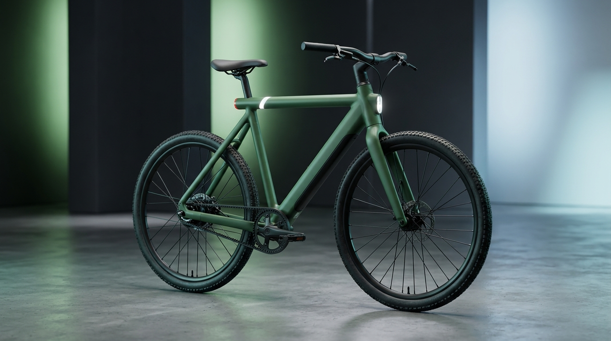

0 g CO₂Bicicleta urbana
Rápida y sin tráfico- Tiempo típico (5 km) 14 min (fluido)
- Gasto por viaje S/ 0.00 (Gratis)
- Recompensa +15 pts por viaje
Avanzas directo por la ciclovía sin semáforos trabados. Ahorras hasta S/ 17 al día y sumas salud.